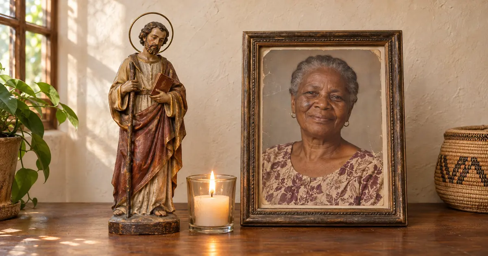

Saints vs Ancestors: Questions I Keep Asking

I was raised Catholic.
Asking a saint to pray for you was familiar territory. Statues, candles, feast days, prayer cards—the whole arrangement felt normal because it was part of the world I grew up in.
But something kept bothering me.
If I can ask a deceased saint to pray for me, what exactly changes when the person I ask is my deceased grandmother?
Does the request become different? Does my intention become different? Or does the biggest difference lie in who has officially recognized the person I am asking?
These questions become even more uncomfortable when African traditions enter the conversation. Practices that sound familiar in Catholic language can suddenly attract suspicion when described in African language.
I am writing because I want to understand that difference—and whether we always apply it fairly.
First, what do Catholics mean by asking saints for help?
Catholic teaching distinguishes worship, which belongs to God, from honoring saints and asking for their intercession.
The idea is that saints pray for us through Christ. They are not independent gods with their own competing departments of supernatural customer service. The Catechism describes the saints’ continuing intercession as part of the communion of the Church.
In everyday terms, Catholics often explain it like this: “You ask your friends to pray for you. Why wouldn’t you ask someone in heaven?”
I understand that explanation.
But it brings me straight back to my original question:
If death does not prevent a saint from praying for me, why would it automatically prevent a deceased relative from doing the same?
For this discussion, that is what I mean by asking an ancestor for help: asking a deceased relative to pray for me.
African traditions are diverse. They cannot all be reduced to one belief or ritual. My question concerns this particular act of intercession.
Being holy and being officially recognized are different things
Catholicism does not teach that canonization creates someone’s holiness. Official recognition concerns a person’s holiness; it does not manufacture it.
That distinction matters.
A grandmother who lived a faithful, generous life would not become closer to God because someone finally completed her paperwork.
Nevertheless, official recognition involves a substantial institutional process. The Church’s procedures require a petitioner, a qualified postulator, evidence, witnesses, and an investigation. Those requirements make organization, documentation, expertise, and resources relevant to which causes move forward.
There are understandable reasons to investigate claims carefully. A worldwide religious community needs standards before presenting someone for public veneration.
But I still want to ask:
Whose lives are most likely to be documented, sponsored, translated, investigated, and remembered?
A person’s holiness and a community’s ability to advance a cause are two different things.
What does the “2%” figure actually mean?
This is where precision matters.
Research by Robert J. Barro and Rachel M. McCleary reported that Africa accounted for approximately 2% of the non-martyr beatifications in their 1900–2012 dataset, classified by the person’s residence at death.
Italy accounted for approximately 42%, and other Western Europe approximately 33%. These are rounded historical shares.
That does not mean only 2% of all Catholic saints are African.
The study concerns a particular period and category. It excludes martyrs, counts beatifications rather than simply counting all canonized saints, and uses geography rather than ethnicity.
A person of African ancestry who lived and died elsewhere would not necessarily appear in its African category.
Those qualifications do not erase the disparity. They tell us what the disparity actually measures.
The fair question is:
Why did this particular route to formal recognition produce such an uneven geographical distribution?
The numbers alone cannot tell us how much resulted from resources, historical circumstances, institutional networks, or cultural bias. They give us a reason to investigate those possibilities.
The global Catholic population
To understand why representation matters, it helps to look at the size of the Catholic community around the world.
The table below uses approximate 2023 figures, allowing a consistently dated comparison with North and South America separated. The American estimates are calculated from the Vatican’s published regional shares.
| Region | Approximate Catholic population | Share of Catholics worldwide |
|---|---|---|
| North America* | 287 million | 20.4% |
| South America | 385 million | 27.4% |
| Africa | 281 million | 20.0% |
| Europe | 287 million | 20.4% |
| Asia | 155 million | 11.0% |
| Oceania | 11 million | 0.8% |
| Worldwide | 1.406 billion | 100% |
For this table, North America includes Mexico, Central America, and the Caribbean. It combines the Vatican’s separately reported North and Central American categories. Numbers and percentages are rounded.
The newer 2024 figures, published in 2026, put Africa at more than 288 million Catholics, slightly ahead of Europe’s approximately 287 million. Africa is home to roughly one in five Catholics worldwide.
That makes African experiences central to the conversation.
But we should resist turning these figures into a misleading equation. Today’s population share and a historical share of non-martyr beatifications measure different things over different periods.
They provide context for questions about recognition. They do not, by themselves, prove why unequal recognition occurred.
Does Grandma actually need Rome’s permission?
Here is an important correction to an assumption that can distort this conversation:
Private devotion and official public veneration are different categories.
Canon law restricts public veneration to people recognized by the Church as saints or blesseds. But the Church’s own instructions explicitly preserve private devotion toward a Servant of God before beatification.
Catholic Answers also explains that a person may privately ask for the prayers of someone they hope is in heaven or purgatory. That explanation is not a Vatican ruling on every African ancestral practice, but it shows why “no canonization, no private request” is too simple.
So Grandma does not necessarily need a Vatican case number before a private request for her prayers can even be considered.
That clarification changes my question.
Instead of asking only, “Why does Rome forbid this?” I find myself asking:
When an African Christian asks a deceased relative to pray for them, do we first try to understand the request—or do we judge it by the label attached to it?
If private intercession is acceptable in one setting, cultural consistency matters when we encounter something similar in another.
The Church’s own language leaves room for this conversation
The Catechism teaches that prayer for the dead can help them and make their intercession for us effective.
That is a striking idea: our relationship in prayer with the dead is not described as flowing in only one direction.
And in Ecclesia in Africa, Pope John Paul II acknowledged African ancestor veneration as “in some way a preparation for belief in the Communion of the Saints.” The document also called for further study of ancestor veneration.
That acknowledgment matters. It recognizes a possible connection between African understandings of continuing family bonds and Catholic teaching about communion beyond death.
It does not approve every ancestral practice. Nor does it remove every theological difference.
But it gives us a reason to begin with careful listening.
When someone says, “My grandmother is still part of my spiritual life,” the next step should be understanding what they mean.
Are saints simply Catholic-approved ancestors?
It is a provocative question, but the answer needs care.
Saints are not necessarily our biological ancestors. Catholic devotion presents them as members of a spiritual family whose significance can extend beyond their relatives or community.
Likewise, African understandings of ancestors differ across cultures. We should not assume that every tradition means the same thing by the word.
Still, the overlap I keep returning to is straightforward:
A person has died. The living believe the relationship has not simply disappeared. They remember that person and may ask for prayer.
That resemblance deserves serious discussion.
A candle beside a saint’s image and a candle beside a grandmother’s photograph do not tell us everything about either person’s beliefs. We need to ask about intention, theology, and meaning.
Are we equally willing to ask those questions in both cases?
Or do we sometimes give familiar Catholic practices a careful explanation while giving unfamiliar African practices a quick condemnation?
Who gets remembered as holy?
Even after distinguishing private devotion from public recognition, the institutional question remains.
A Church can recognize holiness without causing it. Yet official recognition still influences whose stories become widely known.
The people with feast days, approved images, published biographies, and prominent shrines become visible examples of what holiness looks like.
My concern is that visibility can be mistaken for spiritual importance.
An undocumented life is not necessarily an unholy life. A small village’s lack of an organized campaign tells us little about the faithfulness of the people who lived there.
And a grandmother’s inability to attract a postulator does not tell us whether she spent her life feeding neighbors, caring for children, forgiving enemies, and praying for everyone within earshot.
Some grandmothers already managed a parish-sized prayer list. They just never called it an institution.
The question I am still asking
I began with a simple question:
If I can ask a saint to pray for me, can I ask my deceased grandmother?
The Catholic distinction between private devotion and public veneration makes the answer more nuanced than I first assumed.
But it leaves me with questions about consistency, cultural judgment, and institutional recognition.
Do we distinguish asking for prayer from attributing divine power with equal care across cultures?
Do we give African Christians room to explain their own practices?
And when we tell the stories of holy lives, whose stories have the resources and institutional support to travel furthest?
I was raised Catholic. These questions come from taking that inheritance seriously.
If the communion of saints is a family that death cannot destroy, I want to understand how we make room in that conversation for the family members whose names never appeared on a prayer card.
What distinctions do you make between remembering ancestors, asking for their prayers, and venerating saints? I welcome thoughtful responses—especially explanations that take both Catholic teaching and African experiences seriously.